특수용접기능사 (2007-09-16 기출문제)
1과목: 용접일반
1. 가스 용접봉의 채색 표시로 틀린 것은?
- GA 46 - 적색
- GA 43 - 청색
- GB 35 - 자색
- GB 46 - 녹색
(정답률: 39%)

2. 가스용접에서 전진법과 비교한 후진법의 설명으로 맞는 것은?
- 열 이용률이 나쁘다.
- 용접속도가 느리다.
- 용접변형이 크다.
- 두꺼운 판의 용접에 적합하다.
(정답률: 78%)
3. 아크 쏠림을 방지하는 방법 중 맞는 것은?
- 직류 전원을 사용한다.
- 용접봉의 끝을 아크 쏠림 반대 방향으로 기울인다.
- 아크 길이를 길게 유지한다.
- 긴 용접에는 전진법으로 용착한다.
(정답률: 83%)
4. 수동 아크용접기가 갖추어야 할 용접기 특성은?
- 수하 특성과 상승 특성
- 정전류 특성과 상승 특성
- 정전류 특성과 정전압 특성
- 수하 특성과 정전류 특성
(정답률: 56%)
5. 산소용기의 각인에 포함되지 않는 사항은?
- 내압시험압력
- 최고충전압력
- 내용적
- 용기의 도색 색체
(정답률: 76%)
6. 아크 발생 초기에 용접봉과 모재가 냉각되어 있어 입열이 부족하면 아크가 불안정하기 때문에 아크 초기만 용접전류를 특별히 크게 해 주는 장치는?
- 전격방지 장치
- 원격제어 장치
- 핫 스타트 장치
- 고주파발생 장치
(정답률: 92%)
7. 교류용접기의 규격은 무엇으로 정하는가?
- 입력 정격 전압
- 입력 소모 전압
- 정격 1차 전류
- 정격 2차 전류
(정답률: 74%)
8. 다음 중 야금학적 접합법이 아닌 것은?
- 확관법
- 융접
- 압접
- 납땜
(정답률: 88%)
9. 산소와 아세틸렌가스의 불꽃의 종류가 아닌 것은?
- 탄화불꽃
- 산화 불꽃
- 혼합불꽃
- 중성불꽃
(정답률: 76%)
10. 피복 아크 용접에서 직류 정극성(DCSP)을 사용하는 경우 모재와 용접봉의 열 분배율은?
- 모재 70%, 용접봉 30%
- 모재 30%, 용접봉 70%
- 모재 60%, 용접봉 40%
- 모재 40%, 용접봉 60%
(정답률: 81%)
11. 아크용접에서 피복제의 역할이 아닌 것은?
- 용적(globule)을 미세화하고, 용착효율을 높인다.
- 용착금속의 응고와 냉각속도를 빠르게 한다.
- 많은 경우에 피복제는 전지 절연작용을 한다.
- 용착 금속에 적당한 합금원소를 첨가한다.
(정답률: 73%)
12. 연강판 두께가 25.4㎜ 일 때 표준 드래그 길이로 가장 적합한 것은?
- 2.4㎜
- 5.2㎜
- 10.2㎜
- 25.4㎜
(정답률: 73%)
13. 프로판 가스의 성질 중 틀린 것은?
- 연소할 때 필요한 산소의 양은 1:1 정도다.
- 폭발한계가 좁아 안전도가 높고 관리가 쉽다.
- 액화가 용이하여 용기에 충전이 쉽고 수송이 편리다.
- 상온에서 기체 상태이고 무색, 투명하며 약간의 냄새가 난다.
(정답률: 62%)
14. 수중 절단 시 가장 많이 사용되는 가스는?
- 아세틸렌
- 프로판
- 수소
- 벤젠
(정답률: 92%)
15. 다음 아크 절단법 중 텅스텐 전극과 모재 사이에 아크를 발생시켜 모재를 용융하여 절단하는 방법으로 알루미늄, 마그네슘, 구리 및 구리합금, 스테인리스강 등의 금속재료의 절단에만 이용되는 절단법은?
- 티그 절단
- 미그 절단
- 플라즈마 절단
- 금속아크 절단
(정답률: 70%)
16. 보기와 같이 연강용 피복아크 용접봉을 표시하였다. 설명으로 틀린 것은?
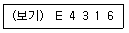
- E : 피복 아크 용접봉
- 43 : 용착 금속의 최저 인장강도
- 16 : 피복제의 계통 표시
- E4316 : 일미나이트계
(정답률: 82%)
17. 가변압식 토치의 팁번호가 400번을 사용하여 중성불꽃으로 1시간 동안 용접할 때, 아세틸렌가스의 소비량은 몇 리터인가?
- 400
- 800
- 1600
- 2400
(정답률: 74%)
18. 알루미늄은 공기 중에서 산화하나 내부로 침투하지 못한다. 그 이유는?
- 내부에 산화알루미늄이 생성되기 때문
- 내부에 산화철이 생성되기 때문
- 표면에 산화알루미늄이 생성되기 때문
- 표면에 산화철이 생성되기 때문
(정답률: 56%)
19. 저융점 합금은 다음 중 어느 금속의 용융점보다 낮은 합금의 총칭인가?
- Cu
- Zn
- Mg
- Sn
(정답률: 40%)
20. 합금강에서 강에 타탄(Ti)을 약간 첨가하였을 때 얻는 효과로 가장 적합한 것은?
- 담금질 성질 개선
- 고온강도 개선
- 결정입자 미세화
- 경화능 향상
(정답률: 32%)
21. 용접성이 가장 좋은 스테인리스강은?
- 마텐자이트계
- 오스테나이트계
- 페라이트계
- 시멘타이트계
(정답률: 70%)
22. 아크용접시 고탄소강의 용접 균열을 방지하는 방법이 아닌 것은?
- 용접 전류를 낮춘다.
- 용접속도를 느리게 한다.
- 예열 및 후열을 한다.
- 급랭경화 처리를 한다.
(정답률: 69%)
23. 금속의 표면에 스텔라이트나 경합금 등을 융접 또는 압접으로 융착시키는 것은?
- 숏 피닝
- 하드 페이싱
- 샌드 블라스트
- 화염 경화법
(정답률: 70%)
24. 소재를 일정온도(A3)에 가열한 후 공냉시켜 표준화 하는 열처리 방법은?
- 불림
- 풀림
- 담금질
- 뜨임
(정답률: 43%)
25. 구리합금의 가스용접시 사용되는 용제로 가장 적합한 것은?
- 사용하지 않는다.
- 붕사, 중탄산나트륨
- 붕사, 염화리튬
- 염화리튬, 염화칼륨
(정답률: 39%)
26. 다음 중에서 합금 주강에 해당 되지 않는 것은?
- 니켈 주강
- 망간 주강
- 크롬 주강
- 납 주강
(정답률: 69%)
27. 용접시 층간온도를 반드시 지켜야 할 용접 재료는?
- 저탄소강
- 중탄소강
- 고탄소강
- 순철
(정답률: 39%)
28. 오스테나이트 스테인리스강 용접시 유의해야 할 사항으로 틀린 것은?
- 짧은 아크 길이를 유지한다.
- 아크를 중단하기 전에 크레이터 처리를 한다.
- 낮은 전류값으로 용접하여 용접입열을 억제한다.
- 용접하기 전에 예열을 하여야 한다.
(정답률: 39%)
29. 일명 유니언 멜트 용접법이라고도 불리며 아크가 용제속에 잠겨 있어 밖에서는 보이지 않는 용접법은?
- 불활성 가스 텅스텐 아크 용접
- 일렉트로 슬래그 용접
- 서브머지드 아크 용접
- 이산화탄소 아크 용접
(정답률: 79%)
30. TIG용접의 전극봉에서 전극의 조건으로 잘못된 것은?
- 고용융점의 금속
- 전자방출이 잘되는 금속
- 전기 저항률이 높은 금속
- 열전도성이 좋은 금속
(정답률: 58%)
31. 공장 내에 안전표지판을 설치하는 가장 주된 이유는?
- 능동적인 작업을 위하여
- 통행을 통제하기 위하여
- 사고방지 및 안전을 위하여
- 공장 내의 환경 정리를 위하여
(정답률: 92%)
32. 용접부의 시험 및 검사의 분류에서 수소시험은 무슨 시험에 속하는가?
- 기계적 시험
- 낙하 시험
- 화학적 시험
- 압력 시험
(정답률: 80%)
33. TIG용접에 사용하는 토륨 텅스텐 전극봉에는 몇 %의 토륨이 함유되어 있는가?
- 4~5%
- 1~2%
- 0.3~0.8%
- 6~7%
(정답률: 72%)
34. 불활성 가스 금속아크용접에 관한 설명으로 틀린 것은?
- 박판용접(3㎜이하)에 적당하다.
- 피복아크용접에 비해 용착효율이 높아 고능률 적이다.
- TIG용접에 비해 전류밀도가 높아 용융 속도가 빠르다.
- CO2용접에 비해 스패터 발생이 적어 비교적 아름답고 깨끗한 비드를 얻을 수 있다.
(정답률: 63%)
35. 전기 용접기의 설치장소로 가장 적당한 곳은?
- 진동이나 충격을 받는 장소
- 유해한 부식성 가스가 있는 장소
- 먼지가 대단히 많은 장소
- 주위 온도가 12℃인 장소
(정답률: 92%)
2과목: 용접재료
36. 아크의 길이가 너무 길 때 발생하는 현상이 아닌 것은?
- 용융금속이 산화 및 질화되기 쉽다.
- 용입이 나빠진다.
- 아크가 불안정하다.
- 열량이 대단히 작아진다.
(정답률: 60%)
37. 이산화탄소 아크용접의 솔리드와이어 용접봉에 대한 설명으로 YGA-50W-1.2-20에서 “50” 이 뜻하는 것은?
- 용접봉의 무게
- 용착금속의 최소 인장강도
- 용접와이어
- 가스실드 아크용접
(정답률: 71%)
38. 가연물의 자연발화를 방지하는 방법을 설명한 것 중 틀린 것은?
- 공기의 유통이 잘되게 할 것
- 가연물의 열 축적이 용이하지 않도록 할 것
- 공기와 접촉 면적을 크게 할 것
- 저장실의 온도를 낮게 유지할 것
(정답률: 58%)
39. 아크를 보호하고 집중시키기 위하여 도기로 만든 페룰 이라는 기구를 사용하는 용접은?
- 스터드 용접
- 테르밋 용접
- 전자빔 용접
- 플라즈마 용접
(정답률: 65%)
40. 시험편의 노치부를 액체 질소로 냉각하고 반대쪽을 가스 불꽃으로 가열하여 거의 직선적인 온도구배를 주고, 시험편의 양 끝에 하중을 가한 상태로 노치부에 충격을 가하여 균열 상태를 알아보는 시험법은?
- 노치 충격 시험
- T형 용접 균열 시험
- 로버트슨 시험
- 슬릿형 용접 균열 시험
(정답률: 23%)
41. 모재를 용융하지 않고 모재보다는 낮은 융점을 가지는 금속의 첨가제를 용융시켜 접합하는 방법은?
- 융접
- 압접
- 납땜
- 단접
(정답률: 76%)
42. 용접결함이 언더컷일 경우 그 보수 방법으로 가장 적당한 것은?
- 정지구멍을 뚫고 재 용접한다.
- 홈을 만들어 용접한다.
- 가는 용접봉을 사용하여 보수한다.
- 결함부분을 절단하여 재 용접한다.
(정답률: 77%)
43. 기밀, 수밀을 필요로 하는 탱크의 용접이나 배관용 탄소강관의 관 제작 이음용접에 가장 적합한 접합법은?
- 심 용접
- 스폿 용접
- 업셋 용접
- 플래시 용접
(정답률: 47%)
44. 용접에서 X형 맞대기 이음을 나타내는 것은?
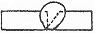
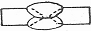
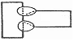
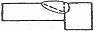
(정답률: 87%)
45. 용접 작업 전 예열을 하는 목적으로 틀린 것은?
- 금속 중의 수소를 방출시켜 균열을 방지
- 용접부의 수축 변형 및 잔류 응력을 경감
- 용접 금속 및 열 영향부의 연성 또는 인성을 향상
- 고탄소강이나 합금강 열 명향부의 경도를 높게 함
(정답률: 58%)
46. 맞대기 용접 이음에서 최대 인장하중이 800kgf 이고, 판 두께가 5㎜, 용접선의 길이가 20㎝ 일 때 용착금속의 인장강도는 얼마인가?
- 0.8 kgf/㎟
- 8 kgf/㎟
- 8×104kgf/㎟
- 8×10⁵ kgf/㎟
(정답률: 38%)
47. 아세틸렌, 수소 등의 가연성 가스와 산소를 혼합시켜 그 연소열을 이용하여 용접하는 것은?
- 탄산가스 아크 용접
- 가스 용접
- 불활성 가스 아크 용접
- 서브머지드 아크 용접
(정답률: 57%)
48. 일렉트로 가스 아크용접에 주로 사용하는 실드 가스는?
- 아르곤
- CO2
- 질소
- 헬륨
(정답률: 48%)
49. 가스용접 작업의 안전사항으로 틀린 것은?
- 가연성 물질이 없는 안전한 장소를 선택한다.
- 기름이 묻어 있는 잡업복을 착용해서는 안 된다.
- 아세틸렌병은 세워서 사용하며 충격을 주면 안 된다.
- 차광안경을 착용해서는 안 된다.
(정답률: 89%)
50. 다음 중 용착법의 설명으로 잘못된 것은?
- 한 부분에 대해 몇 층을 용접하다가 다음 부분의 층으로 연속시켜 용접하는 것이 스킵법이다.
- 잔류응력이 다소 적게 발생하고 용접 진행 방향과 용착방향이 서로 반대가 되는 방법이 후진법이다.
- 각 층마다 전체의 길이를 용접하면서 다층용접을 하는 방식이 덧살올림법이다.
- 한 개의 용접봉으로 살을 붙일만한 길이를 구분해서 홈을 한 부분씩 여러 층으로 쌓아 올린 다음 다른 부분으로 진행하는 용접방법이 전진 블록법이다.
(정답률: 58%)
3과목: 기계제도
51. 제 3각법에 의한 정투상도에서 배면도의 위치는?
- 정면도의 위
- 좌측면도의 좌측
- 정면도의아래
- 우측면도의 우측
(정답률: 45%)
52. 기계제도에서 표제란과 부품란이 있을 때 표제란에 기입할 사항들로만 묶인 것은?
- 도번, 도명, 척도, 투상법
- 도명, 도번 , 재질, 수량
- 품번 , 품명, 척도, 투상법
- 품번, 품명, 재질, 수량
(정답률: 51%)
53. 보기 입체도의 각 3각법 정투상도로 가장 적합한 것은?
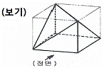
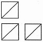
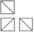
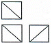
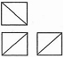
(정답률: 71%)
54. 보기 도면의 드릴가공 설명으로 올바른 것은?
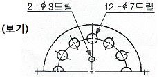
- 지름 7㎜ 구멍이 12개
- 지름 12㎜ 구멍이 12개
- 지름 12㎜ 깊이는 7㎜
- 지름 2㎜의 구멍을 수평 중심점을 대칭으로 하여 3㎜의 간격으로 가공
(정답률: 76%)
55. 기계제도에서 가상선의 용도가 아닌 것은?
- 인접부분을 참고로 표시하는 데 사용
- 도시된 단면의 앞쪽에 있는 부분을 표시하는 데 사용
- 가동하는 부분을 이동한계의 위치로 표시하는 데 사용
- 부분 단면도를 그릴 경우 절단위치를 표시하는데 사용
(정답률: 43%)
56. 보기와 같은 용접 기호 및 보조기호의 설명으로 올바른 것은?
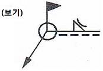
- 필릿 용접으로 凸(블록)형 다듬질
- V 용접으로 凸(블록)형 다듬질
- 양면 V 용접으로 凸(블록)형 다듬질
- 필릿 용접으로 凹(오목)형 다듬질
(정답률: 63%)
57. 기계제도 도면에서 치수기입시 사용되는 기호가 잘못된 것은?
- ∅20
- R30
- S∅40
- □∅10
(정답률: 73%)
58. 보기 입체도를 화살표 방향을 정면으로 보고 제 3각법으로 기본 3도면을 올바르게 정투상한 것은?
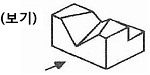
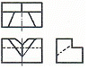
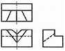
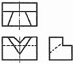
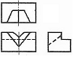
(정답률: 54%)
59. 보기 원추를 전개하였을 경우 전개면의 꼭지각이 180° 가 되려면 ∅ D의 치수는 얼마가 되어야 하는가?(문제 복원 오류로 그림파일이 없습니다. 정답은 4번입니다. 추후 복원하여 두겠습니다.)
- ∅100
- ∅120
- ∅150
- ∅200
(정답률: 62%)
60. 배관도에서 유체의 종류와 글자 기호를 나타내는 것 중에서 틀린 것은?
- 공기 : A
- 가스 : G
- 유류 : O
- 수증기 : V
(정답률: 75%)